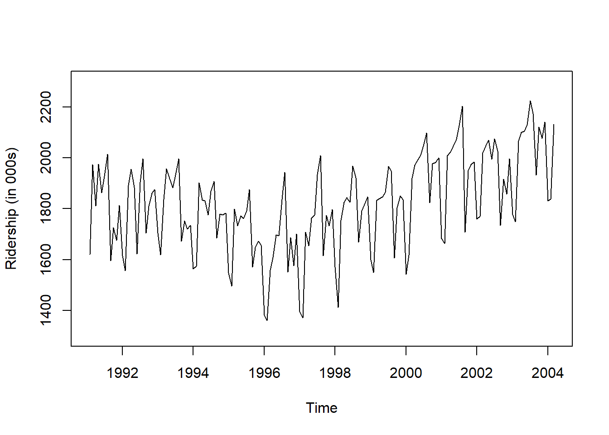
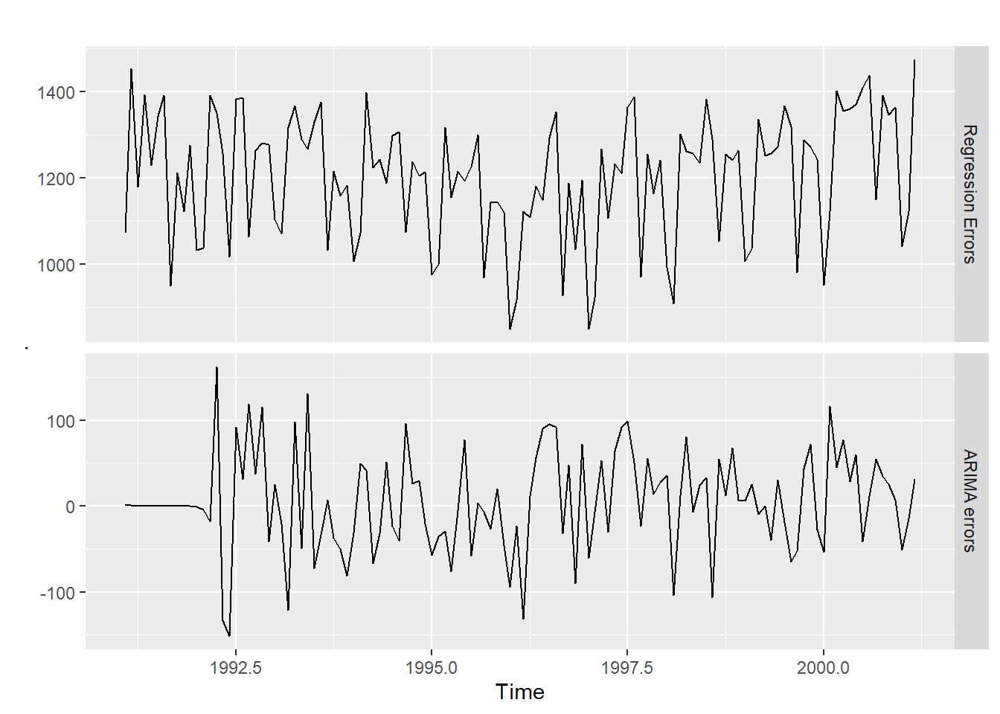
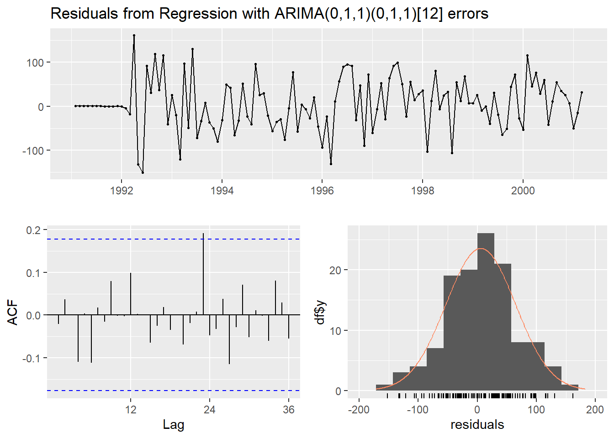
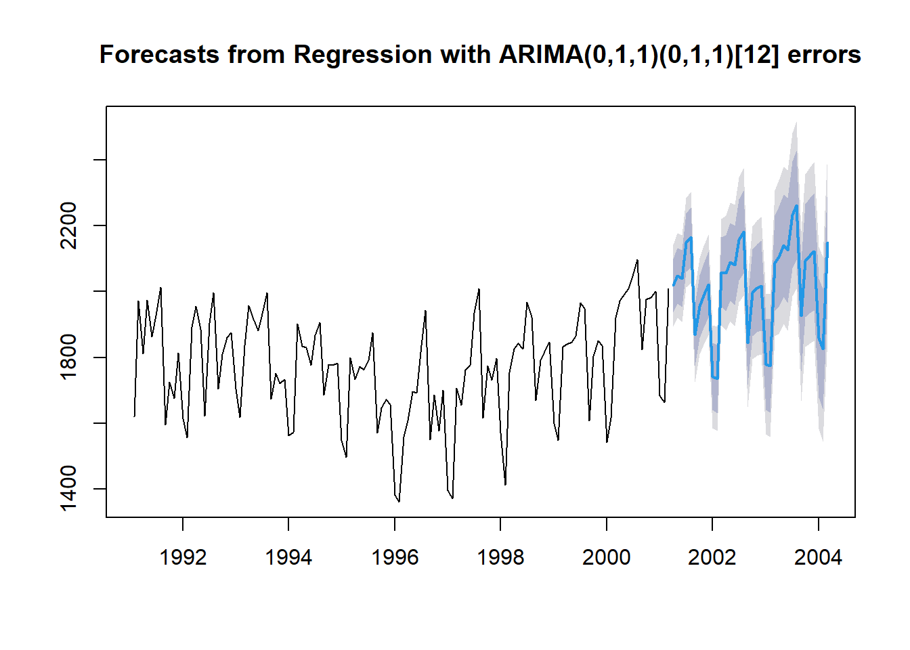
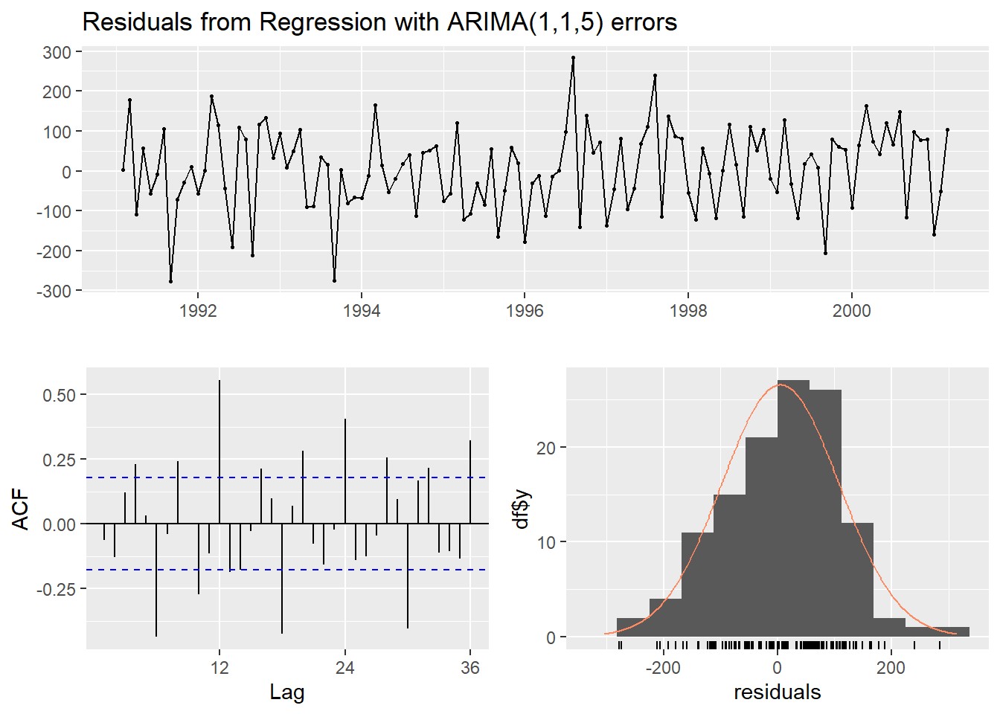
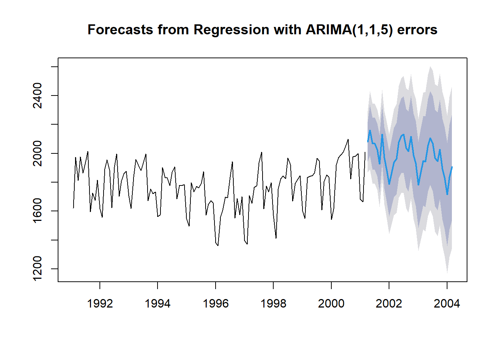

pacman::p_load("forecast",
"dplyr")
Amtrak.data <- read.csv(".../Amtrak.csv") # 데이터 불러오기
Amtrak.data %>%
as_tibble8 Dynamic Harmonic Regression
8.1 Amtrak
예제 데이터로 사용하는 "Amtrak.csv"은 1991년 1월부터 2004년 3월까지 미국 철도 회사인 암트랙에서 제공한 월간 승객 수(단위 : 1,000명)가 기록되어져 있다.
8.1.1 데이터 불러오기
# A tibble: 159 × 2
Month Ridership
<chr> <dbl>
1 01/01/1991 1709.
2 01/02/1991 1621.
3 01/03/1991 1973.
4 01/04/1991 1812.
5 01/05/1991 1975.
6 01/06/1991 1862.
7 01/07/1991 1940.
8 01/08/1991 2013.
9 01/09/1991 1596.
10 01/10/1991 1725.
# ℹ 149 more rows8.1.2 데이터 전처리
# 1. Create Predictor Variable
ridership.df <- Amtrak.data %>%
dplyr::mutate(Lag1 = dplyr::lag(Ridership,
n = 1)) %>% # 바로 이전 과거에 관측된 값을 예측 변수로 생성
na.omit() # 결측치 NA가 포함된 행 제거 -> 첫 번째 시계열은 과거 관측값이 없기 때문에 변수 Lag1에 NA 생성
ridership.df %>%
as_tibble# A tibble: 158 × 3
Month Ridership Lag1
<chr> <dbl> <dbl>
1 01/02/1991 1621. 1709.
2 01/03/1991 1973. 1621.
3 01/04/1991 1812. 1973.
4 01/05/1991 1975. 1812.
5 01/06/1991 1862. 1975.
6 01/07/1991 1940. 1862.
7 01/08/1991 2013. 1940.
8 01/09/1991 1596. 2013.
9 01/10/1991 1725. 1596.
10 01/11/1991 1676. 1725.
# ℹ 148 more rows# 2. Convert to ts for Target
ridership.ts <- ts(ridership.df$Ridership,
start = c(1991, 2), # 시계열의 시작 연도 / c(1991, 2) : 1991년 2월 -> 첫 번째 시계열은 제거했기 때문
frequency = 12) # 주기 / 월별 시계열로 1년에 12번 관측
# 시계열 그림
plot(ridership.ts,
xlab = "Time", ylab = "Ridership (in 000s)",
ylim = c(1300, 2300))
Caution! CSV 파일로 불러온 데이터를 살펴보면 승객 수를 포함하는 변수 Ridership가 수치형임을 알 수 있다. 시계열 데이터 분석을 위해 함수 ts()를 이용하여 해당 변수를 시계열 객체로 변환해야 한다.
Result! 시계열 그림을 살펴보면 Amtrak 데이터는 U자 형태의 추세를 발견할 수 있으며, 여름(7월과 8월) 동안에 승객이 급증하는 뚜렷한 계절변동도 볼 수 있다.
8.1.3 데이터 분할
Caution! 시계열 데이터 분석 시 모형의 과적합을 피하고 미래 데이터에 대한 예측력을 계산하기 위해 Training Dataset과 Test Dataset으로 분할해야 한다. 시계열 데이터의 경우, 시간에 의존하기 때문에 시간 순서를 고려하여 데이터를 분할해야 한다. 즉, 앞 시점의 데이터를 Training Dataset로 사용하여 모형을 구축하고, 뒷 시점의 데이터를 Test Dataset로 사용하여 구축된 모형의 성능을 평가한다. 여기서는 데이터 분할을 위해 함수 window()를 사용한다.
# Partition for Target
train.ts <- window(ridership.ts,
start = c(1991, 2), # 분할하고자 하는 시계열의 시작 연도 / c(1991, 2) : 1991년 2월 -> 첫 번째 시계열은 제거했기 때문
end = c(2001, 3)) # 분할하고자 하는 시계열의 마지막 연도 / c(2001, 3) : 2001년 3월
test.ts <- window(ridership.ts,
start = c(2001, 4)) # 분할하고자 하는 시계열의 시작 연도 / c(2001, 4) : 2001년 4월
nTrain <- length(train.ts) # Training Dataset의 데이터 포인트 개수
nTest <- length(test.ts) # Test Dataset의 데이터 포인트 개수
train.ts %>%
as_tibble# A tibble: 122 × 1
x
<dbl>
1 1621.
2 1973.
3 1812.
4 1975.
5 1862.
6 1940.
7 2013.
8 1596.
9 1725.
10 1676.
# ℹ 112 more rowstest.ts %>%
as_tibble# A tibble: 36 × 1
x
<dbl>
1 2024.
2 2047.
3 2073.
4 2127.
5 2203.
6 1708.
7 1951.
8 1974.
9 1985.
10 1760.
# ℹ 26 more rowsnTrain[1] 122nTest[1] 368.2 Regression Model
- \(j\)개의 예측 변수를 포함한 회귀모형은 다음과 같이 표현할 수 있다. \[
\begin{align*}
Y_t = \beta_0 +\beta_1 X_{1,t} +\cdots + \beta_j X_{j, t} + \epsilon_t
\end{align*}
\]
- \(Y_t\) : 시점 \(t\)에서의 시계열
- \(X_{i,t}\) : 시점 \(t\)에서의 \(i\)번째 예측 변수
- \(\beta_0\) : 절편
- \(\beta_i\) : \(X_{i,t}\)의 회귀계수
- \(\epsilon_t\) : ARIMA 모형 가정하는 오차항
- \((1-\phi_1B-\cdots-\phi_pB^p)(1-B)^d\epsilon_t=(1+\theta_1B+\cdots+\theta_qB^q)e_t\)
- \(\phi_1, \ldots, \phi_p, \theta_1, \ldots, \theta_q\) : 추정해야하는 모수
- \(e_t\) : 평균이 0이고 분산이 \(\sigma^2_e\)인 백색잡음과정
- \((1-\phi_1B-\cdots-\phi_pB^p)(1-B)^d\epsilon_t=(1+\theta_1B+\cdots+\theta_qB^q)e_t\)
Caution! Package "forecast"에서 제공하는 함수 auto.arima()를 이용하면 예측 변수를 포함한 회귀모형을 구축할 수 있다. 예측 변수의 경우 옵션 xreg에 입력하면 된다.
regres <- auto.arima(train.ts, # Target : 시계열
xreg = ridership.df$Lag1[1:nTrain]) # 예측 변수 in 1-2
summary(regres) # 모형 구축 결과Series: train.ts
Regression with ARIMA(0,1,1)(0,1,1)[12] errors
Coefficients:
ma1 sma1 xreg
-0.7482 -0.7136 0.3209
s.e. 0.1148 0.1066 0.1604
sigma^2 = 4023: log likelihood = -610.18
AIC=1228.35 AICc=1228.74 BIC=1239.12
Training set error measures:
ME RMSE MAE MPE MAPE MASE ACF1
Training set 5.605564 59.12303 45.82698 0.2300602 2.608721 0.5562436 -0.02117107Result! 모형 추정 결과에 따르면, 예제 데이터 Amtrak에 대하여 다음과 같은 모형이 추정되었다. \[
\begin{align*}
Y_t &= 0.3214X_{\text{lag}, t} + \epsilon_t,\\
(1-B)(1-B^{12})\epsilon_t &= (1-0.7484B)(1-0.7140B^{12})e_t
\end{align*}
\]
# 두 오차항 epsilon_t와 e_t에 대한 시계열 그림
cbind("Regression Errors" = residuals(regres, type = "regression"), # 회귀모형으로부터의 오차항 epsilon_t
"ARIMA errors" = residuals(regres, type = "innovation")) %>% # ARIMA 모형으로부터의 오차항 e_t
autoplot(facets=TRUE) # Plot
# ARIMA 모형으로부터의 오차항 e_t의 백색잡음과정 확인
checkresiduals(regres)
Ljung-Box test
data: Residuals from Regression with ARIMA(0,1,1)(0,1,1)[12] errors
Q* = 13.323, df = 22, p-value = 0.9237
Model df: 2. Total lags used: 24# Test Dataset에 대한 예측 수행
pred.regres <- forecast(regres,
h = nTest, # Test Dataset의 데이터 포인트 개수만큼 예측값 계산
xreg = ridership.df$Lag1[-(1:nTrain)]) # Test Dataset의 예측 변수
pred.regres %>%
as_tibble# A tibble: 36 × 5
`Point Forecast` `Lo 80` `Hi 80` `Lo 95` `Hi 95`
<dbl> <dbl> <dbl> <dbl> <dbl>
1 2019. 1937. 2100. 1894. 2143.
2 2048. 1964. 2132. 1920. 2177.
3 2040. 1953. 2126. 1908. 2172.
4 2148. 2059. 2237. 2012. 2284.
5 2164. 2073. 2256. 2025. 2304.
6 1868. 1775. 1961. 1725. 2011.
7 1955. 1859. 2050. 1809. 2101.
8 1988. 1890. 2086. 1839. 2138.
9 2021. 1922. 2121. 1869. 2174.
10 1742. 1640. 1844. 1586. 1898.
# ℹ 26 more rowsplot(pred.regres)
8.3 Dynamic Harmonic Regression
- 기술이 점점 발달함에 따라 시계열은 시간당, 분당, 초당으로 관측 가능해지며, 이렇게 관측된 시계열은 종종 긴 계절 주기를 가진다.
계절 주기가 길 때, 계절성 ARIMA보다 선호되는 모델이Dynamic Harmonic Regression (DHR)이다.- 게다가,
다중 계절성을 가진 시계열에도 DHR은 유용하다. - DHR은 sine과 cosine 함수의 선형 조합으로써
계절성을 설명하는 푸리에 항(Fourier Term)을 가진 회귀모형이다. - 계절 주기가 \(m\)인 시계열 \(Y_{t}\)에 대한 DHR 모형식은 다음과 같다. \[
\begin{align*}
Y_t = \beta_0 +\beta_1 X_{1,t} +\cdots + \beta_j X_{j, t} + \sum^{K}_{i=1} \left[\alpha_{i} sin\left(\frac{2πit}{m} \right) + \gamma_{i} cos\left(\frac{2πit}{m} \right) \right] + \epsilon_t,
\end{align*}
\]
- \(Y_t\) : 시점 \(t\)에서의 시계열
- \(X_{i,t}\) : 시점 \(t\)에서의 \(i\)번째 예측 변수
- \(\beta_0\) : 절편
- \(\beta_i\) : \(X_{i,t}\)의 회귀계수
- \(\alpha_{i}\) & \(\gamma_{i}\) : 추정해야할 모수
- \(K\) : 사인과 코사인 쌍의 개수로써 \(m/2\) 이하의 고정된 값
- \(sin\left(\frac{2πit}{m} \right)\), \(cos\left(\frac{2πit}{m} \right)\) : 푸리에 항
- \(\epsilon_t\) : ARIMA 모형 가정하는 오차항
- \((1-\phi_1B-\cdots-\phi_pB^p)(1-B)^d\epsilon_t=(1+\theta_1B+\cdots+\theta_qB^q)e_t\)
- \(\phi_1, \ldots, \phi_p, \theta_1, \ldots, \theta_q\) : 추정해야하는 모수
- \(e_t\) : 평균이 0이고 분산이 \(\sigma^2_e\)인 백색잡음과정
- \((1-\phi_1B-\cdots-\phi_pB^p)(1-B)^d\epsilon_t=(1+\theta_1B+\cdots+\theta_qB^q)e_t\)
Caution! 푸리에 항은 package "forecast"에서 제공하는 함수 fourier()를 이용하여 생성할 수 있다.
fourier(x, K, h)x: 주기를 가지는 시계열K: 사인과 코사인 쌍의 개수- 시계열이 다중 계절성을 가질 때 각 주기마다
K설정 - 예를 들어, 시계열이 2개의 계절성을 가지면,
K = c(첫 번째 주기를 이용하여 생성하는 개수, 두 번째 주기를 이용하여 생성하는 개수)로 입력
- 시계열이 다중 계절성을 가질 때 각 주기마다
h: 예측하고자 하는 시점 개수Test Dataset에 대한 푸리에 항을 계산할 때 사용
DHR.fit <- auto.arima(train.ts, # Target : 시계열
xreg = cbind(Lag1 = ridership.df$Lag1[1:nTrain], # Lag 1 Var. in 1-2
fourier(train.ts, K = 2)), # 푸리에 항
seasonal = FALSE) # 회귀모형의 오차에 SARIMA 모형은 고려 X
summary(DHR.fit) # 모형 구축 결과Series: train.ts
Regression with ARIMA(1,1,5) errors
Coefficients:
ar1 ma1 ma2 ma3 ma4 ma5 Lag1 S1-12 C1-12 S2-12 C2-12
-0.4195 0.2130 -0.6252 -0.6185 0.0814 0.5288 -0.4579 -11.1957 -173.8855 -54.6805 -15.1761
s.e. 0.1863 0.1455 0.1083 0.0805 0.0881 0.0930 0.1875 18.0561 25.9078 26.1408 25.4836
sigma^2 = 11728: log likelihood = -733.98
AIC=1491.96 AICc=1494.85 BIC=1525.51
Training set error measures:
ME RMSE MAE MPE MAPE MASE ACF1
Training set 4.995877 102.8321 83.6292 -0.0307368 4.755063 1.015083 -0.06433778Result! 주기 12를 가지는 예제 데이터 Amtrak에 DHR 모형을 적용하기 위해 함수 fourier()에 옵션 K = 2를 입력함으로써 푸리에 항 \(\left[ sin\left(\frac{2πt}{12}\right), cos\left(\frac{2πt}{12}\right)\right]\)와 \(\left[ sin\left(\frac{4πt}{12}\right), cos\left(\frac{4πt}{12}\right)\right]\)을 사용하였다. 모형 추정 결과에 따르면, 예제 데이터 Amtrak에 대하여 다음과 같은 모형이 추정되었다. \[
\begin{align*}
Y_t =& -0.4737X_{\text{lag}, t} -13.0529 \times sin\left(\frac{2πt}{12} \right) -175.5142 \times cos\left(\frac{2πt}{12} \right)\\
& -54.6605 \times sin\left(\frac{4πt}{12}\right) -13.3815 \times cos\left(\frac{4πt}{12}\right) + \epsilon_t,\\
(1+0.4347B)(1-B)\epsilon_t =& (1+0.2354B-0.6354B^2-0.6173B^3+0.0837B^4+0.5173B^5)e_t
\end{align*}
\]
# ARIMA 모형으로부터의 오차항 e_t의 백색잡음과정 확인
checkresiduals(DHR.fit)
Ljung-Box test
data: Residuals from Regression with ARIMA(1,1,5) errors
Q* = 184.85, df = 18, p-value < 2.2e-16
Model df: 6. Total lags used: 24# Test Dataset에 대한 예측 수행
pred.DHR <- forecast(DHR.fit,
h = nTest, # Test Dataset의 데이터 포인트 개수만큼 예측값 계산
xreg = cbind(Lag1 = ridership.df$Lag1[-(1:nTrain)], # Test Dataset의 예측 변수
fourier(train.ts, K = 2, h = nTest)))
pred.DHR %>%
as_tibble# A tibble: 36 × 5
`Point Forecast` `Lo 80` `Hi 80` `Lo 95` `Hi 95`
<dbl> <dbl> <dbl> <dbl> <dbl>
1 2081. 1942. 2220. 1869. 2293.
2 2160. 1983. 2337. 1889. 2431.
3 2067. 1886. 2248. 1791. 2343.
4 2067. 1885. 2249. 1789. 2345.
5 2024. 1842. 2206. 1745. 2303.
6 1929. 1732. 2125. 1628. 2230.
7 2132. 1929. 2334. 1821. 2442.
8 1969. 1757. 2180. 1645. 2292.
9 1877. 1658. 2095. 1542. 2211.
10 1787. 1561. 2013. 1442. 2133.
# ℹ 26 more rowsplot(pred.DHR)
# 정확도 비교
forecast::accuracy(pred.regres$mean, test.ts) # Regression Model에 대한 예측 정확도 ME RMSE MAE MPE MAPE ACF1 Theil's U
Test set -29.46246 59.70142 40.45216 -1.536698 2.087479 0.2322672 0.342284forecast::accuracy(pred.DHR$mean, test.ts) # DHR에 대한 예측 정확도 ME RMSE MAE MPE MAPE ACF1 Theil's U
Test set 16.50118 134.5848 107.5043 0.496811 5.412356 0.3881301 0.7861543